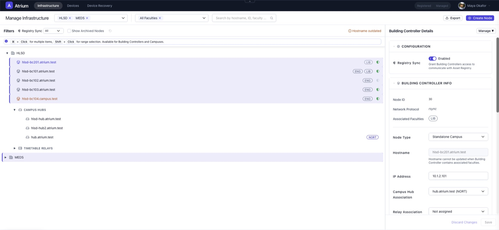
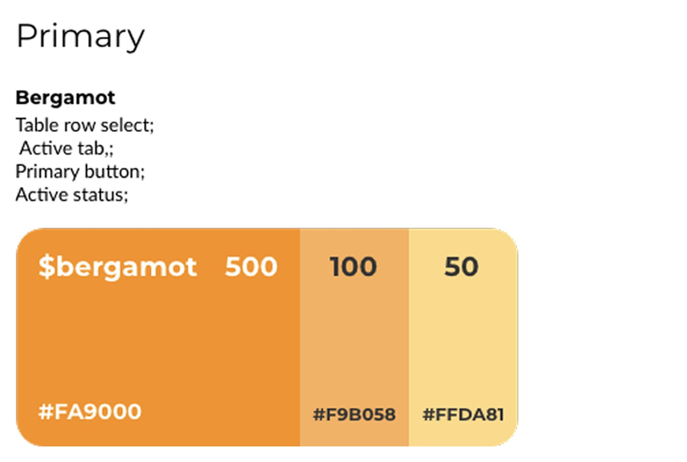

Projetando experiências,
de produtos a jogos.
Mais de 10 anos transformando sistemas complexos em interfaces que as pessoas conseguem usar, e jogos que as pessoas querem jogar. Sou o David, Designer de UX Sênior na Venturus e Game Designer na Harpia Games.
- 10+ anos em UX/UI
- 40 mil wishlists · Dark Island na Steam
- Design systems adotados por clientes
Trabalhos em destaque
Três projetos, um para cada tipo de vaga que busco.

UX de software · protótipos ao vivoAtrium: controle de AV do campusAções bloqueadas se explicam. Um plano de controle para infraestrutura de campus, com três protótipos clicáveis e os requisitos por trás deles. UI de jogos · na Steam · 40 mil wishlistsDark Island: Faded MemoriesToda a UI e o logo de um jogo de fantasia sombria: controller-first, molduras prateadas, seleção dourada.
UI de jogos · na Steam · 40 mil wishlistsDark Island: Faded MemoriesToda a UI e o logo de um jogo de fantasia sombria: controller-first, molduras prateadas, seleção dourada. Game design · cooperativoWild SagaUma aventura cooperativa 2.5D para 10+, em que a cooperação é a mecânica central, de puzzles ao combate por contra-ataque.
Game design · cooperativoWild SagaUma aventura cooperativa 2.5D para 10+, em que a cooperação é a mecânica central, de puzzles ao combate por contra-ataque.
Todos os trabalhos
Filtre pelo tipo de trabalho. Empresa e período estão em cada card.
Desenhar os estados, não só as telas. Erros, confirmações e status viram telas próprias, com as regras escritas ao lado, e tudo é organizado para que um engenheiro consiga construir a partir dali.
Uma identidade própria para cada jogo, controles que moldam o layout e cada estado (pausa, derrota, vitória, bloqueado, moeda insuficiente) desenhado como uma tela.
Duas escalas bem diferentes, um jogo de equipe de dois semestres e uma game jam, com o mesmo hábito: uma ideia central clara e depois os sistemas que a servem.
- UX de softwareAtrium: controle de AV do campusAções bloqueadas se explicam. Uma ferramenta de controle de infraestrutura de campus, com três protótipos clicáveis.
- Protótipo ao vivoAtrium: experimenteAbra os protótipos: infraestrutura, dispositivos e recuperação de dispositivos.

Design systemDesign system do AMLFeito em uma semana por 3 designers, totalmente adotado pelo cliente e elogiado pelos devs pelo handoff. UX de softwareCompal · New ShopfloorFluxos de acesso, menus e usuários e permissões de um sistema de fábrica.
UX de softwareCompal · New ShopfloorFluxos de acesso, menus e usuários e permissões de um sistema de fábrica. UX mobileHSF · Serviços FinanceirosUm redesign antes e depois do cartão de consórcio, com um controle deslizante.
UX mobileHSF · Serviços FinanceirosUm redesign antes e depois do cartão de consórcio, com um controle deslizante.- DTrabalhos anterioresProjetos da DaitanInterfaces de call center, biometria em aeroportos, SMS bancário, ferramenta de aprendizado e telecom.
- UI de jogosDark Island: Faded MemoriesUI controller-first, kit e logo de um jogo de fantasia sombria na Steam. 40 mil wishlists.
 UI de jogosTiny HeroesUm hub de heróis, de wireframes a telas finais, e uma animação de retrato.
UI de jogosTiny HeroesUm hub de heróis, de wireframes a telas finais, e uma animação de retrato. UI de jogos · jogávelThe Dark Maze of MythosTelas mobile, UI kit e um protótipo jogável do jogo do labirinto.
UI de jogos · jogávelThe Dark Maze of MythosTelas mobile, UI kit e um protótipo jogável do jogo do labirinto. Ferramenta de editorUnity Character SelectorUm painel do editor Unity para ver, animar e recolorir personagens.
Ferramenta de editorUnity Character SelectorUm painel do editor Unity para ver, animar e recolorir personagens.- Documento de game designWild SagaUma aventura cooperativa 2.5D em que a cooperação é a mecânica, com um post mortem sincero.
 Documento de game designThe Dark Maze of MythosUm labirinto de terror mobile: a tocha é seus olhos e seu farol.
Documento de game designThe Dark Maze of MythosUm labirinto de terror mobile: a tocha é seus olhos e seu farol.
Sobre mim
Designer de UX e de jogos. Desenho interfaces e sistemas para os dois: mais de dez anos, de web e design editorial na Chuva Inc., passando por design systems na Daitan, até design de produto na Venturus, e game design na Harpia Games desde 2019.
Moro em Campinas, Brasil. Português (nativo), inglês (profissional completo).
Vamos conversar
Procurando um designer de UI/UX para software ou jogos, ou um game designer? Mande uma mensagem.